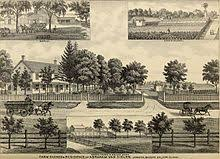

Jamaica Estates Histories
Jamaica Estates was created in 1907 by the Jamaica Estates Corporation, which developed the hilly terminal moraine's 503 acres (2.04 km2), while preserving many of the trees that had occupied the site.[5] The company was founded by Ernestus Gulick and Felix Isman, both of Philadelphia. In 2007, following the damage of the roof of the Historic Gatehouse in Hurricane Isabel, the restoration and beautification of the Gatehouse and Malls was completed. The Jamaica Estates Association, founded in 1929, continues as an active, vital civic organization representing the community. An Historical Plaque was unveiled April 23, 2010, on the Midland Mall by The Aquinas Honor Society of the Immaculate Conception School (now the Immaculate Conception Catholic Academy) and by the sponsor of the plaque, Senator Frank Padavan.